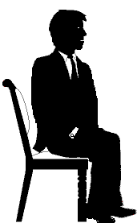

|
|
What is Auditing? |
|
|
What is Auditing? |
The Auditor TRs Course is for students who want to learn to audit. The TRs are about how you do auditing; they form the backbone of this activity. But first of all, let's define the TRs:
Definition of TRs or Training Routines: 1) Practical drills, where students prefect their communication skills to the level needed by an auditor in session. The TRs take up and drill the component parts of communication. Good TRs are the 'Carrier wave' needed to make processes work. 2) Specific auditor skills in communication and smooth session control are gained in doing the TRs.
In this chapter we cover in some detail the different elements of auditing. Getting some basic ideas, elements and definitions solidly in place gives the student of the Auditor TRs Course the needed frame of reference.
What is auditing?
First of all for auditing or processing to take place you need two persons: a
trained practitioner (auditor) and a client (pc). On the surface they 'sit and
talk'. The auditor's communications skills are very important. An auditor is
as good an auditor as he can do his TRs. R. Hubbard puts it this way:
"The auditing skill of any student auditor will only be as good as he can do the TRs. Errors and confusions in TRs is the basis for all other errors and confusions in trying to audit."
|
An auditing session. |
The practitioner is usually called an auditor; that means a person that asks questions and listens to the answers.
The auditor's client or student is called a preclear. Auditing is usually conducted as an one-on-one activity in a session where the auditor and the preclear are sitting at a table facing each other.
Here are a few simple definitions and basics related to auditing:
Auditing is the application of ST processes and procedures to someone by a trained auditor.
An auditor is one who listens carefully to what his preclear has to say; he is trained and qualified in applying ST processes to others for their betterment.
A process is a set of questions asked by an auditor to help a person find out things about himself and life and so improve himself and his life and the conditions around him. Therefore a more exact definition of auditing (also called processing) would be, the action of asking a preclear a question (which he can understand and answer), getting an answer to that question and acknowledging him for that answer. He continues a process until they reach its End Phenomena (EP), which typically includes a new realization for the preclear and preclear feeling happy about it.
A preclear is a term used to describe a person who, through ST processing, is finding out more about himself and life. Through processing he is advancing towards a higher state of being, called Clear. (Abbreviation: PC).
Reactive Bank (also called the Bank or Reactive Mind). This is the subconscious or unconscious part of the mind. It's that portion of a person's mind which is not under his volitional control, and which exerts force and the power of command over his awareness, purposes, thoughts, body, and actions. By use of good TRs and the Meter the auditor can piece by piece neutralize the influence of the Reactive Bank on the pc.
The Auditor
As mentioned several times, the auditor is the
practitioner in ST. To become a good auditor you have to learn a series of basic
skills. You have to follow The Auditors Code.
The Auditors Code. This is the professional code of conduct that you always have to observe when you are auditing. It is based on experience over many years. When you observe it closely, your pc will usually get excellent results and gains out of the processing. When you deal with it carelessly or break it, the pc will get a lot less than the optimum results out of the processes. He may even become worse. Some of the important points are:
No evaluation. Never tell the preclear what to think about his problems; never try to solve his problems for him. Let him figure it out and help him to do that with the technology and the processes. To break that rule in auditing is bad. It's called evaluation.
No invalidation. Never tell the preclear what you think is wrong with him -- or worse, tell him he is wrong about something. Again, the whole purpose of auditing is to help the preclear become capable of figuring these things out for himself. To make wrong or contradict the preclear is called invalidation. It's bad to do as an auditor as it's very counter-productive.
Maintain communication. According to the Code you need to be in good communication with your pc. You carefully listen to what he has to say. You know from what he says what is going on. You acknowledge his answers appropriately and, if he comes up with something unexpected, you know how to respond. (Communication will be the subject matter of several full chapters).
Never get angry. You never get angry with your preclear. You patiently work with him, so he can relax and concentrate on finding the answers in his mind. You make the pc feel safe and relaxed, so he can go where the process sends him with a feeling of security.
 |
The goal of ST is to delete |
Auditor + PC > PC's Bank.
There is a basic formula, that makes auditing
work: Auditor + PC > PC's Bank.
That means Auditor plus the PC is greater than the PC's Reactive Bank. That is the simplest way to say why auditing works. The trained auditor is there to help the pc explore and gradually eradicate his Reactive Bank. Everything you will learn on this course can be seen to support that. If it does, it is valid. If it doesn't, it is harmful. Everything you will learn will directly or indirectly support this exploration. All your basic skills and tools have to pass this test. Do you help the pc explore and overcome his Bank - or do you hinder it? If you hinder him, you are definitely doing something wrong. Every procedure and process is seen in the same light. The right process at the wrong time can work against this, as the pc isn't ready yet. The right process applied wrongly by the auditor can work against this, and the auditor has to find out what he is doing wrong and correct it or have it corrected by his instructor.
The Auditors Code, that we will cover in full later in ST, has this as its primary function: it contains those points that it is absolutely necessary to observe in order for Auditor plus PC to be greater than the PC’s Reactive Bank.
Who can become an auditor
There are roughly as many female as male auditors. To become a good auditor
has little to do with the practitioner's sex. Some pc's will prefer a male
auditor, some a female one. If we mainly refer to the auditor as 'he' or 'him'
in the manual it is only for practical reasons.
To become a good auditor you need certain personal qualities. You need to
have a desire to help your fellow Man. The stronger your desire the better. You
need to believe that in that you can help him. The course will help you
develop that; but unless you have a personal desire and belief in these things
to begin with, you may not be able overcome the difficulties you can run into.
So keep your desire and belief in these things clean and strong - or get your
difficulty sorted out if you should suddenly feel less enthusiastic about your
undertaking.
You need to be able to study and learn practical skills. You have to be able to turn written instructions into exact actions and keep learning until you have it exactly right.
You need a certain type of courage. In auditing you are exploring unknown territory as far as your pc is concerned. You need to do that courageously and keep going until you get to the End Phenomena. You need to develop a positive and friendly attitude. It's not the auditor's "deep think" or "deep understanding" that makes auditing work. It's more like: every time the pc looks up he sees the auditor is right there with him encouraging him and supporting him in getting on with it. It's the auditors high interest in his preclear and his positive encouraging attitude and being with the pc every step of the way, that helps the pc overcome his Bank. You need to be persistent and insistent in a positive way. The auditor should stay positive and encouraging even when the pc runs into problems or difficulties. You don't agree with your pc's difficulties. You are there to help him overcome them and get him through it. And this you have to accomplish without getting angry with or invalidating, or evaluating for, your pc.
You need to develop and continue to develop your one-on-one communications skills. There is a lot about this in the course, as communication is the basic skill that makes the processes work. They will not work on a mechanical level unless the pc is with it and feels in communication and understood.
|
The basic action |
Auditing
Here are is another basic definition of auditing
from R. Hubbard's works:
"Auditing is the action of asking a preclear a question, getting an answer to that question and acknowledging him for that answer. Auditing gets rid of unwanted barriers that inhibit, stop or blunt a person's natural abilities. It step by step increases the abilities of a person, so he becomes more able and his survival, happiness and intelligence increase enormously."
Here is how Geoffrey Filbert defines auditing or processing in his book Excalibur Revisited:
"Processing is the application of a precise technology based on principles of the human mind and life. The auditor helps and listens to another person in order to "clear" that person of confusions. It enables the person being cleared (the pre-clear) to increase his ability to be, to live, perceive, experience, understand and act by freeing his attention from confusions. It can be applied at any level of awareness and through it a person can solve his difficulties in life and thought.
"The goal of processing is to bring a person closer to the state of Clear where he ceases to act irrationally (re-act), is total cause over his existence if he chooses to be, and can handle anything that he is confronted with.
"Clears have fewer problems, better health, higher IQs, higher perception, quicker reaction time, are more stable, more oriented and have better personalities by traditional standards. They are highly individualistic. The state of Clear is an obtainable and attainable reality."
Auditing is usually an exact question or set of questions or commands that the auditor gives to the pc. This is what we call a process. These processes are well researched and tested. The processes you will learn on this course have all been in use for over 30 years, some of them decades longer.
Here is an example of a simple process:
The auditor gives the first auditing command to the pc
and waits for his answer.
The pc finds an answer in his mind and answers with perhaps "Yes".
The auditor acknowledges.
The auditor says: "Tell me about it".
The pc tells the auditor about the incident he recalled.
The auditor acknowledges the answer.
The above is part of an actual process; you will learn more about recall processes later.
The processes are designed to get the pc to look deeper and deeper into his Reactive Bank or look at mechanisms in his mind that get their power from the Reactive Bank. Since recall is often used to get there, the Recall Grade is important. The actual process quoted is used as an example as it isn't very upsetting or prone to get you into a lot of difficulties.
Can Auditing be Harmful?
The processes you will learn on this course will
do you and your pc a lot of good. But you may have asked yourself this question:
can it be harmful?
The rule at this level is: any auditing is better than no auditing. Any of the processes you will learn here will benefit your pc even if run in a less than perfect way.
No auditor needs to audit with the fear that he will do some irreparable damage if he makes an error.
R. Hubbard's book: "Dianetics™: The Modern Science of Mental Health" provides the answer to the question, "What happens if I make a mistake?"
The following extracts are from the chapter "The Mind's Protection":
"The mind is a self-protecting mechanism. Short of the use of drugs..., shock, hypnotism or surgery, no mistake can be made by an auditor which cannot be remedied either by himself or by another auditor."
"Any case, no matter how serious, no matter how unskilled the auditor, is better opened than left closed."
This is good to know, when you are just starting out. You can always bail out the pc. But you will learn the processes so well and make sure you drill everything thoroughly first, that you very rarely will have a need to bail your pc out.
 |
The typical Preclear is |
The Preclear
So, who is your preclear? Is it a patient ready
to explode or commit suicide? Is auditing only for mentally troubled people?
Although an experienced auditor can handle all kinds of difficulties the subject as such is far from the same as a "mental therapy". It is designed and intended for spiritual gains. You will have the best time and best results with people that already do quite well in life, but are looking for more. It is actually contained in the very word "Preclear".
"Pre" means before; and "Clear" is a high and desirable state of being.
Clear is a very exciting state of being or existence. A person who goes Clear will feel a tremendous rise in power and freedom; he will feel detached from all bad experiences of the past. He will see his own future as bright and promising. He will be able to think and see clearer. How exactly it will change you is for you to find out. To determine if a person has obtained the state of Clear is a technical thing with its own definitions and technology.
The pc will probably feel great and something like this many times during his processing, even on this level.
It may not last for a long time early in auditing. A release is a temporary state, while Clear is a permanent state.
There are two states of being you pursue in ST auditing. The one is the ultimate state of Clear. The other state is a state of release.
You are going for a release each time you run a process. It may be less spectacular than described above. But from time to time you will hit a state of release that feels real great. The pc may think he went Clear. These are the high points of auditing. This is what you are after. Every auditing question or command, every little skill you learn and apply is done to get to this goal.
A process is complete, when it is taken to End Phenomena (EP). It may be less spectacular than the state of Clear or a state of Major Release. But the pc will know that it is a step in the right direction. He will know that he has handled one more stumbling block or one more confusion or source of feeling down and bad about himself.
Each EP of a major process consists of (1) Very Good Indicators (VGI's), (2) a cognition or realization about himself or something important to him, (3) a feeling of release - and if it is a metered session - the auditor will observe (4) a Floating Needle (F/N) on the Meter. That is a free moving needle pattern, the needle swinging harmonically back and forth and nothing the auditor says is going to change that.
 |
ST is "a Western way to |
In a way the best comparison for auditing is Eastern Belief systems, where a student seeks a master in order to reach perfection. He can do various mental, physical or religious practices in order to achieve that. It may be meditation, prayer, or physical exercises as in yoga or tai chi.
Auditing is however a more businesslike approach to fulfill these old goals of Man. It does take commitment from the preclear to achieve a major state of release or the state of Clear. But when we talk auditing, there is an exact technology that does work when the rules are followed and the processes are run correctly, one after the other. It isn't "just thinking the right thoughts" or "sending the right prayers" or sitting in the right position long enough and hoping for the best. It's an exact route, one process after the other. The processes are laid out in a certain order of increasing difficulty. You follow this program step by step and you will end up at the top of the ladder.
It can be both casual and quite businesslike, getting there. You don't have to follow strange diets or rigid rules that make a normal life impossible. You do have to follow a healthy lifestyle, eat and sleep properly, stay off drugs, take no excess of alcohol (and no alcohol 24 hours before a session), and not get yourself involved in unethical conduct. But these requirements will not interfere with holding a normal job, pursuing your favorite hobbies and activities, having a normal sex life and family life, and meeting your friends as always - and at all times appearing very usual, and leading a normal healthy life.

These basic ideas and definitions give you pretty much an outline of what auditing is all about. The auditor helps the pc dive into his Reactive Mind to find some irrationality. In session it is brought into the light of consciousness and knowingness and thoroughly inspected. That causes it to lose its command power over the pc. The pc can again think clearly in the area and make rational decisions based on the analytical facts.
 |
<<----- |
|
|
Two students doing TRs. Here girl is coach; the man the student auditor. They take turns and help each other through the drills to the full skill level required. |
||